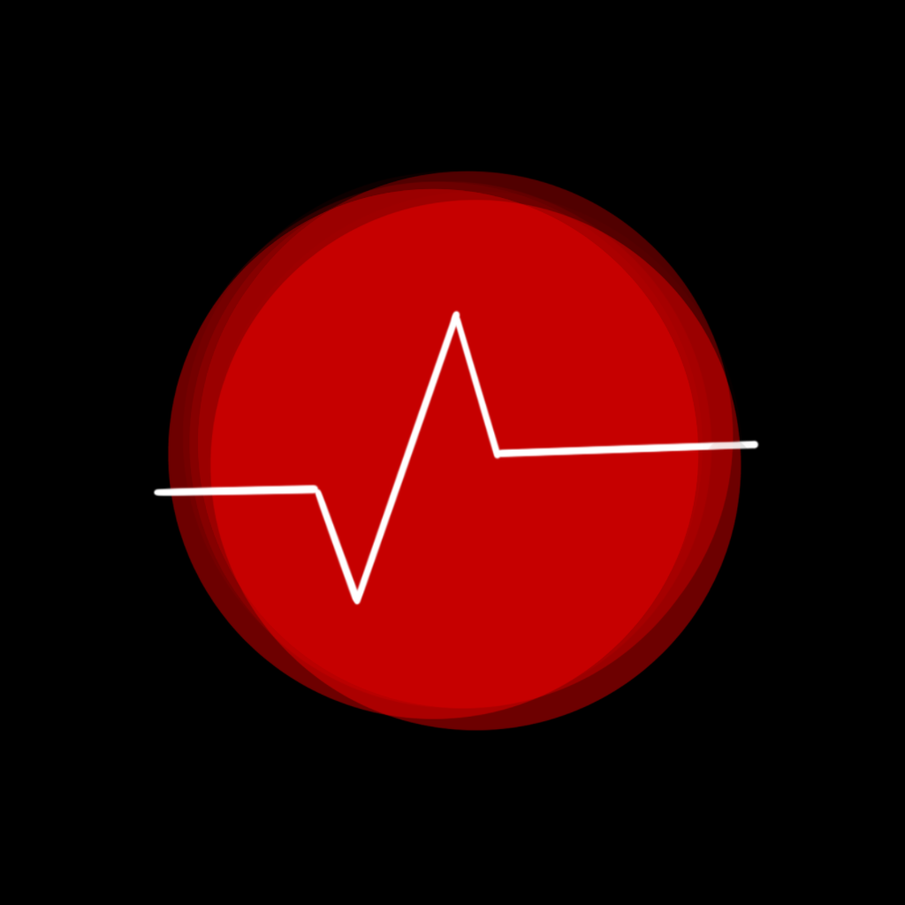
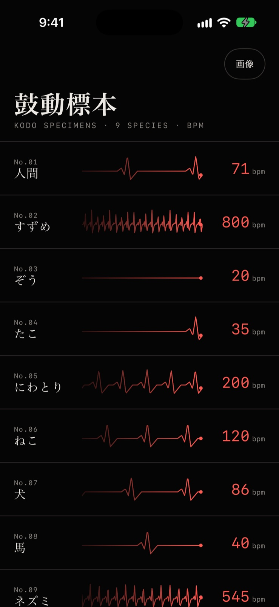
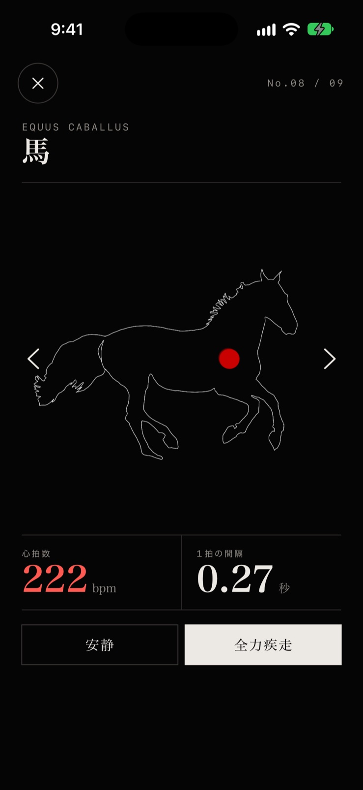
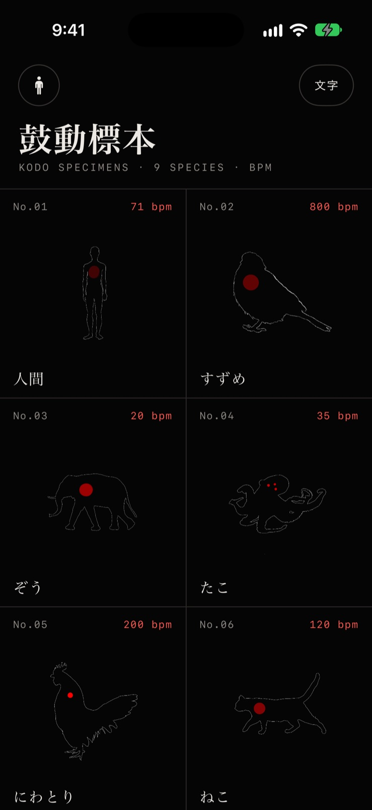
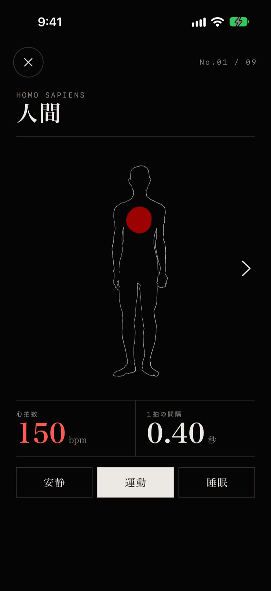
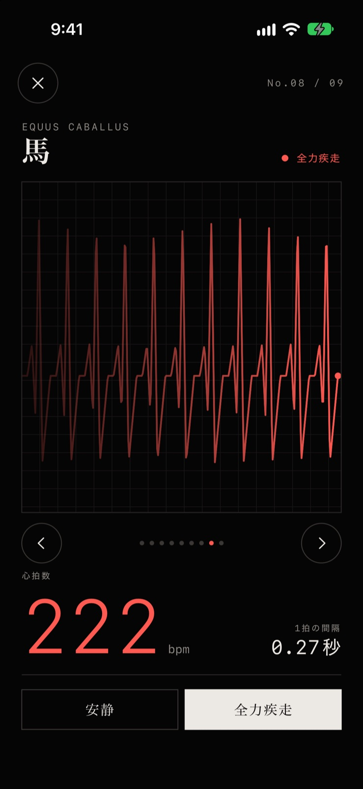

9種類の鼓動標本
人間、すずめ、ぞう、たこ、にわとり、ねこ、犬、馬、ネズミ。生き物ごとの心拍数（bpm）と一緒に、心臓がその生き物の速さで脈打ちます。

すずめの心臓は1分間に800回、



FEATURES
標本箱のように並んだ生き物たちの心臓が、それぞれの速さで脈打っています。
人間、すずめ、ぞう、たこ、にわとり、ねこ、犬、馬、ネズミ。生き物ごとの心拍数（bpm）と一緒に、心臓がその生き物の速さで脈打ちます。
生き物を選ぶと、iPhoneが「ドクン、ドクン」と鼓動のリズムで振動します。自分の胸に手を当てて、速さの違いを比べられます。
人間は「安静・運動・睡眠」、すずめは「飛行中」、馬は「全力疾走」など、状態を切り替えると鼓動の速さも変わります。
右上の「文字」ボタンで、絵の代わりに心電図の波形で鼓動を表示します。数字と波で、速さの違いがひと目でわかります。
SPECIMENS
安静時の心拍数です。赤い点も、それぞれの鼓動のリズムで脈打っています。
HOW TO USE
一覧から生き物を選ぶだけで、すぐに鼓動を感じられます。
標本箱のような一覧から、気になる生き物をタップします。

iPhoneを手に持つと、鼓動のリズムで振動が伝わります。
「安静」「全力疾走」などを選ぶと、鼓動の速さが変わります。

左右の矢印やスワイプで、ほかの生き物の鼓動に切り替えられます。
MONITOR
一覧の右上で「画像」と「文字」を切り替えられます。「文字」にすると、すべての生き物の鼓動が心電図の波形で並び、すずめやネズミの細かい波と、ぞうのゆったりした波を見比べられます。詳細画面では大きな心電図モニターに、心拍数と1拍の間隔を表示します。
SCREENSHOTS
横にスクロールして、すべての画面を見られます。
生き物ごとに違う生きる速さを、振動で感じる鼓動標本アプリ。
ご意見・ご要望、不具合のご報告を受け付けています。
TwitterのDMで問い合わせる本アプリが、お名前などの個人を特定できる情報を集めることはありません。広告の表示には Google AdMob を利用しています。詳しくはプライバシーポリシーをご覧ください。
プライバシーポリシーを読む